上次做年度总结是三年前，翻了翻上次的总结，发现现在居然跟三年前有着挺多的相同点，与三年前相同的伙伴重走了三年前同样的路，同样面临人生的“小小”转折点，切换城市，切换未来一段时间朝夕相处的人，也同样在转折中面临了失恋，同样在痛苦中度过了很久，也同样很迷茫，不一样的是，三年前即将面对研究生生活，还可以告诉自己在学校这三年还有很多可能，但如今在走向社会之后选择的可能更少了，迷茫的却更深了……
毕业篇
今年最大的主题就是“毕业”与“工作”，回忆起来，研究生三年坦白讲走的并不好，前一年半因为众所周知的原因被封闭在学校很久很久，甚至有很长一段时间只能窝在寝室里吃着学校提供的“豫”制饭菜，因为三年前那篇总结提到的一些原因没有考到自己想象中的“互联网氛围”浓厚的城市或学校，也让自己慢慢在找工作上变得得过且过，老板论文的push压力又经常让自己焦头烂额，无心其他，互联网（或者说整体就业）氛围的急转直下更是让毕业招聘期间的心情down到了极点，有时会经常想吐槽自己为什么本科毕业非要选择考研，直接去工作肯定比现在混得更好（笑）（当然也有个人努力原因，但在时代大潮之下真的不想去pua自己），可能这就是人生吧，不过就是起落落落落落，哈哈。
上半年就是在写论文和走毕业流程中度过，中间穿插着看了两场演出，三月份看了去年最爱的歌手许钧的《期待集》巡演郑州站，他的歌真的充满着力量和勇气，支撑我度过了很长一段时间的疲惫期。
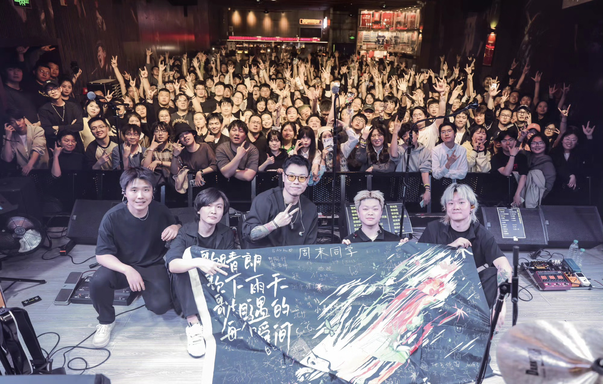
五月份又去常州看了一场太湖湾音乐节，当时是第一次去音乐节，看到自己喜欢的歌手就跑到最前面去蹦蹦跳跳，累了就到沙发区躺在充气沙发上晒晒太阳看看手机，感觉也很舒适和新奇，感谢音乐，让我这纯种i人枯燥的生活中多了那么多绚丽的体验，不敢想自己如果没有这些爱好生活会有多么的单调和无聊。


上半年和21年很相似的地方就是也换了自己的笔记本，ThinkBook已经成了美帝良心想少数的好产品线，当时拿到机器的时候基本还是满意的，足够丰富的接口和U7的性能足够让我用很长时间，也能够让我打一些负载低的游戏，实在不行那不就是全低1080P嘛（问为什么不买游戏本就是买过一次之后直接拉黑这种又厚又重的玩意），唯一不爽的地方就是当时间跳到年末的时候真的被国补和各种降价狠狠背刺了一大波，只能在心里安慰自己早买早享受…..

六月几乎是所有毕业生最繁忙，也是情绪最丰富的一个月，我的六月也发生了太多太多的事情，六月第一天自己生命中最重要的伙伴之一，陪我一起成长成熟的，只大我三天的表哥步入了婚姻的殿堂。看着身边同龄的亲人朋友步入人生下一个阶段真的是一件非常幸福的事情，特别是看到自己一起成长的伙伴步入人生新角色的时候真的替他开心和感动，每当这时也总会想想自己的人生规划，情感规划……
可紧接着又是与三年前同步般收到了前女友的分手消息，这段同校校园感情真的付出了我太多的时间和精力，性格使然，在感情中我可能做不到足够花心思，足够让人惊喜和幸福，但至少在我看来也是足够认真，努力维系，尽力满足，也真的倾注了自己甚至过量的情感。在收到消息的时候又是一阵阵的头蒙和无助，我真的是一个很讨厌很讨厌改变的人，突如其来的一系列生活和情感上的改变让我头晕脑胀，不知该如何面对。曾经在谈恋爱之初就说好了“分手”词汇的忌讳，并告诉对方如果说了分手自己绝对不会挽回，但到了面对的时候还是忍不住想要挽留这份感情。坦白讲这段感情经过了太久太久的戒断期，尽管也有很多朋友在安慰和鼓励我，“回忆”这个烂东西也仍然让我度过了很多个不眠的夜晚，今年失眠通宵的次数几乎是前二十多年的总和。
紧接着月中又有一次课题组毕业欢送会，跟同门和师弟一起前往北京跟老师现在的学生一起吃顿饭，联培的原因其实三年都是腾讯会议只闻其声（就这样也还是一直被push做实验发论文）。老师也是一个i人，i人聚餐真的异常尴尬，特别是面对了一群只闻其声的师弟师妹，甚至还有一些本科学生时，自己的尴尬与不安几乎到达了顶点，但是还是努力要配合表演，真的太难啦！（笑）
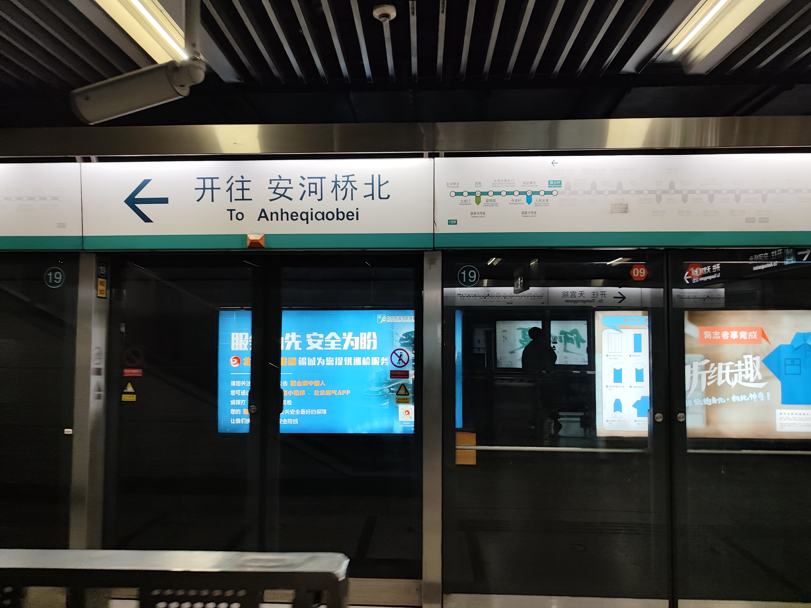

聚餐之后去了定居在北京的堂姐家里住了两三天，姐姐带我逛了北京的很多地方，吃了很多好吃的，还一起去了环球影城，这些主题乐园也确实贵有贵的道理，体验足够丰富，可惜当时还在为失恋烦扰，情绪上不够Up吧，好想回到六月份再开心的玩一回（笑）。所以也真的希望自己在对待感情，或者说对待任何生活中的事上更豁达一些，会减少自己很多的痛苦和遗憾。

六月中下旬返回学校进行毕业典礼，结束这可能最后的校园时光。跟熟悉的朋友们一起欢聚，庆祝毕业，与本科毕业不同的是，可能大多数人完全不想再经历一遍痛苦的硕士生涯……
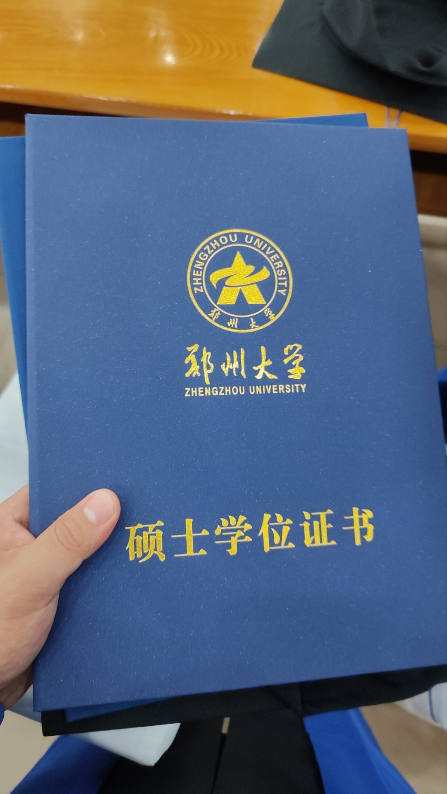
工作&看演出篇
回家休整几天就需要直奔“打工人”生活，先去的是公司总部深圳培训，培训之前跟几个好友一起又一次踏上去重庆的路，一方面是一起相聚旅游，另一方面他们也有为我排解内心情绪散心的意思，每次想到自己有一群这么好的朋友都会感觉自己真的很幸运和幸福。我真的就是生在河南，胃在川渝，每次吃到川渝美食都有种满足的感觉。


然后就踏上了工作培训之路，培训之余去了趟华强北（详见前面几个帖子），可惜当时时间不够没去酷安（大概也跟自己太i了不知道去哪说啥有关….），去逛了世界之窗（逛完真的怀疑人生，来这种公园花了我一百多？？？？），然后也是第一次看海，看到金色的沙滩，吹着咸咸的海风，内心一片平静……


培训完就回到了上海，开始了我下半年的牛马看演出之路（bushi），还记得看的第一场演出是艾怡良的《不想忘记的名字们》上海站，第一次来到蜚声Livehouse，那音响还有艾怡良当天不稳定的表现让我感到有一点点无奈，十几年的老粉看到她慢慢变红真的很开心，可惜现在唱歌状态是真的很差了。
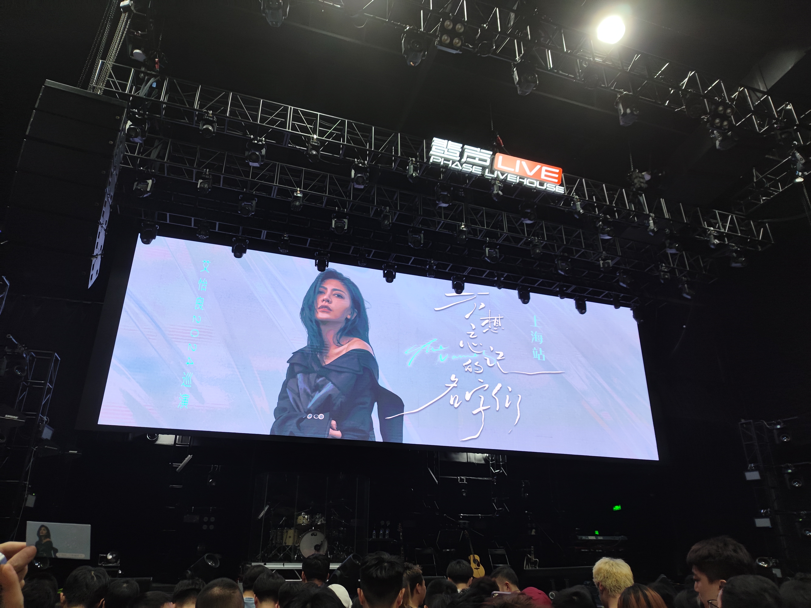
刚上班就给自己买了一辆小电驴，顶着七月烈日只是跑了一个周末就发现自己明显晒黑了很多，直接慌得开始买各种防晒霜和美白精华，黑得太快直接让我变得小小精致一下…(到了冬天直接全不抹了，笑)
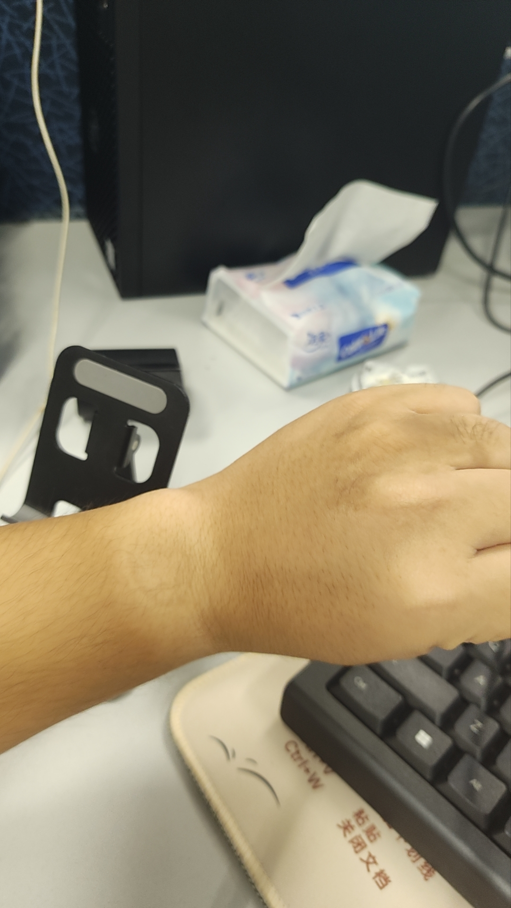
七月末又赶上上海的ChinaJoy 2024 第一次参加这种二次元+数码展，感觉还挺有意思，可惜自己真的不是二次元，好多东西不太懂，只能去各大厂商的台子上逛逛，又嫌人太多不想参与活动，基本都是走马观花的看，不过重在体验啦，很多漂亮的coser小姐姐倒是，明年还会来（笑）。

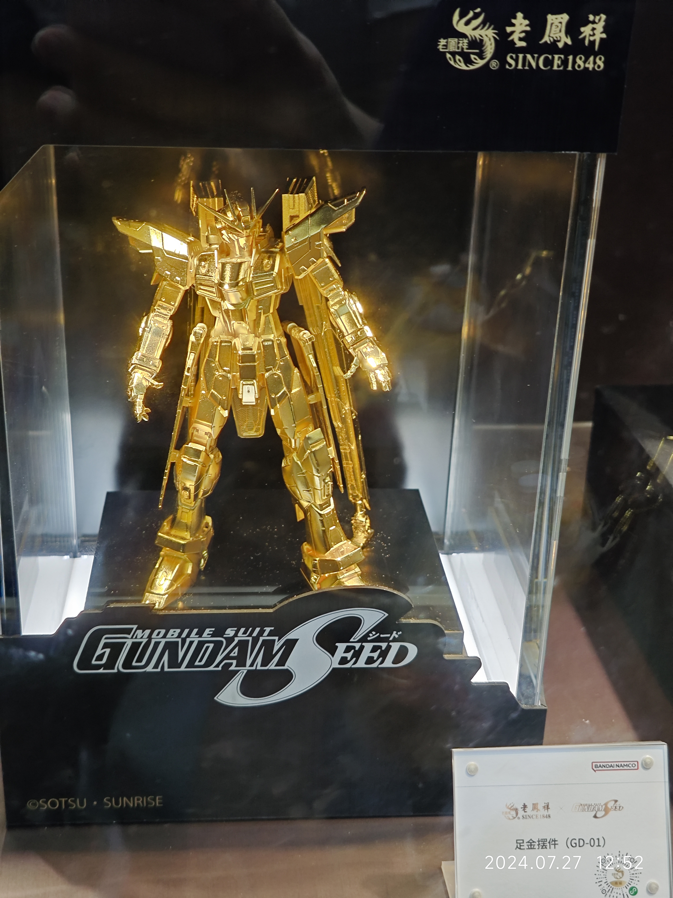
又测了一次自己的MBTI，发现自己成功从ISFJ小护士变成了ISTJ蓝老头，F到T的变化不知道自己该高兴还是悲伤，可能真的就是硕士期间被Push加上这段感情的创伤让自己逐渐变得“清醒”，有时候又觉得是不是太淡漠，变成“机器人”人格后感觉很多事真的就不太在意了……
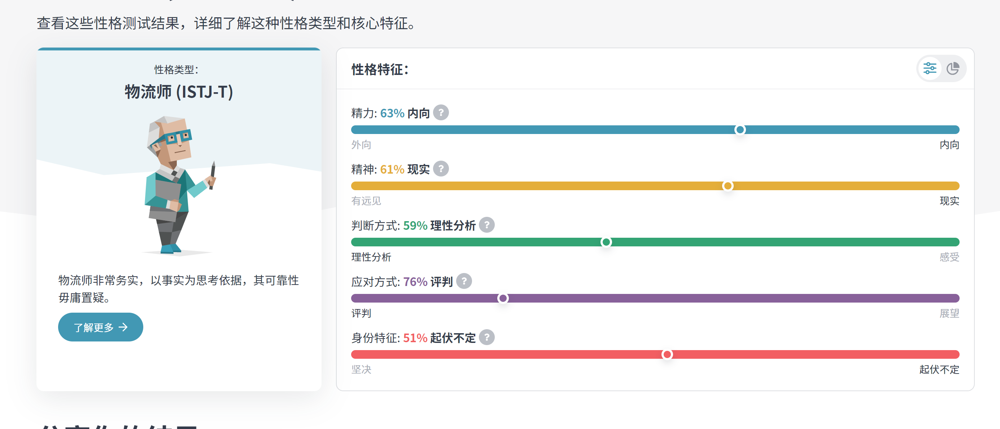
从八月开始又一次将减肥计划提上日程，同样是熟悉的从有氧慢跑开始，这次认真的查询了很多相关知识，才知道几年前从始至终全力跑步，放飞心率的跑法很容易造成不可逆的心肌肥大，从此就开始严格看表看心率跑步。刚好在上海租的鸟笼旁边有一个公园，就一直在公园跑步，刚开始的时候是每天只要不下雨就不休，跑到我自己设定的心率阈值就停下来走，直到心率降下来再继续往前跑，等心肺功能慢慢上升之后就开始有氧慢跑定速巡航，日跑量再大一点之后就跑一休一，保证每个月至少跑100-150km，就这样一直坚持到现在。
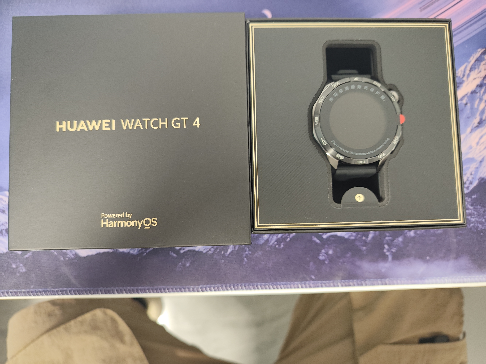
为跑步换的华为GT4手表
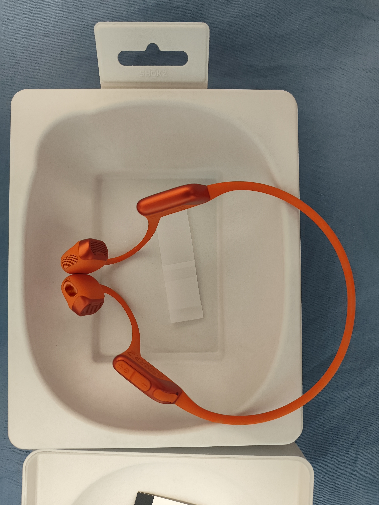
为跑步换的韶音骨传导运动耳机
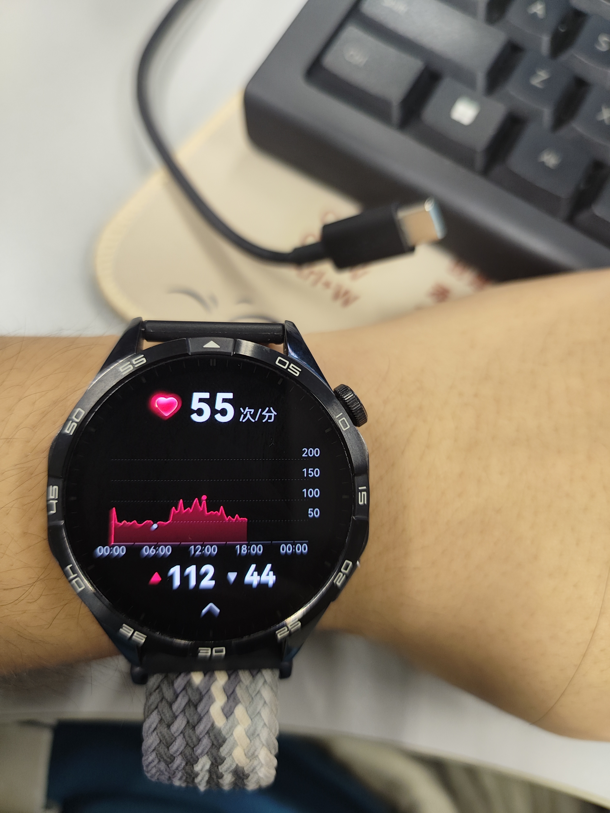
跑了一段时间发现静息心率经常都小于60了，这也是心肺功能的进步吧
八月初又去看了徐佳莹《变得有些奢侈的事》上海站，lala的唱功真的没话说，还成功看到两位小品天后的合体，拉式情歌真的直戳我心，放任自己Emo的心情，让F属性爆发，边跟唱边哭……
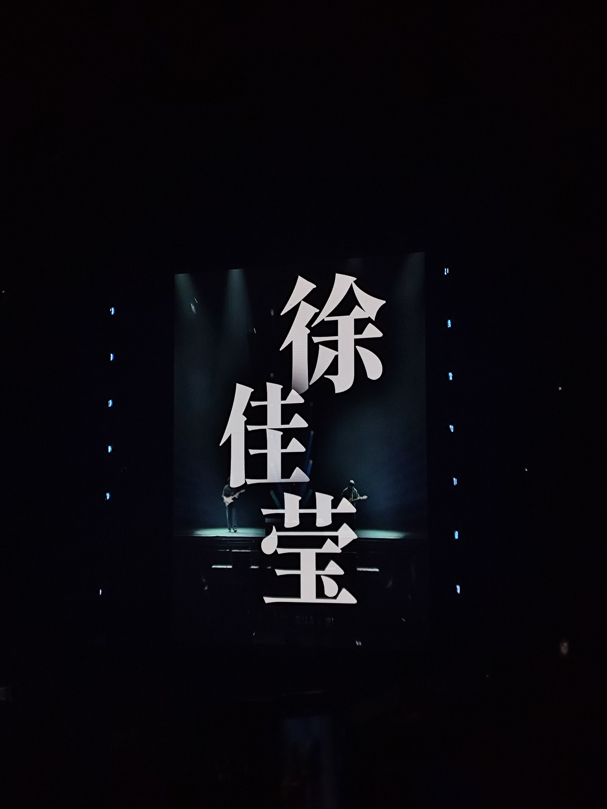
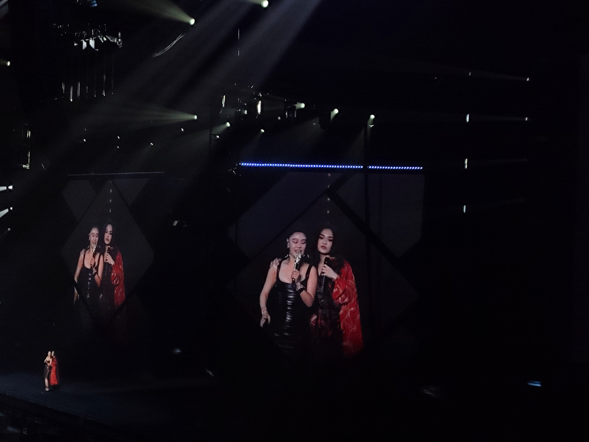
九月初继续看了张惠妹《ASMR MAX演唱会》上海站，七八九三个月看完了《傲娇》三姐妹的演出，阿妹是体力最好，也是机能最好的一个，从头到尾都非常有爆发力，每次都说粉丝唱的声音好大让她好感动，之后才知道每场都说…….（突然就觉得敷衍了，笑）
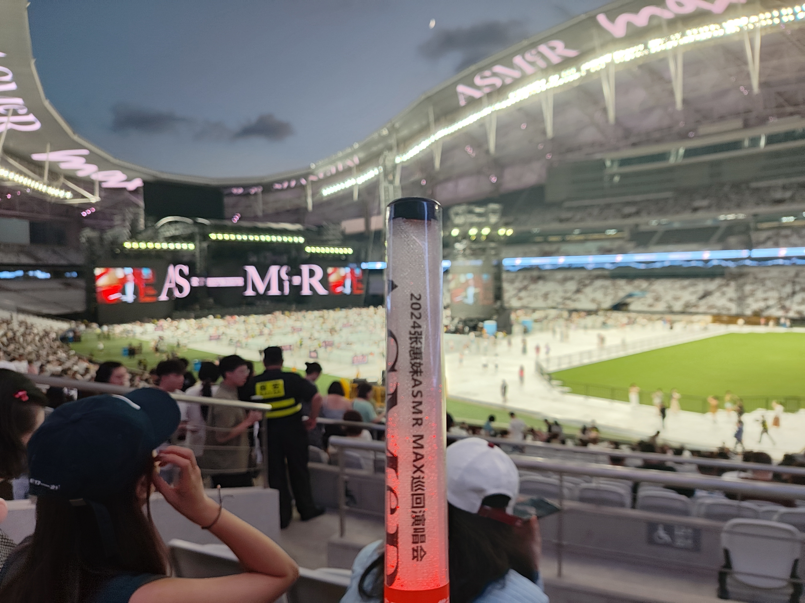
从八月开始就定下了自己学习音乐的计划，然后也在上海找了一圈音乐机构（说是一圈也就家附近的两三个），试课之后选了现在的声乐老师，一对一上声乐课真的好贵啊，可以说是贵到离谱，算算我声乐老师的时薪也真是很强了，上了一段时间的课发现唱歌水平提高还是很显著的，在一段时间快速进步之后，现在开始放慢自己上课的进度了，消化学习内容还需要好一段时间的练习。日常感叹自己如果活得洒脱一点一定会让父母放我走上学音乐的道路，可能现在的人生又是另一种模式吧（当然学音乐花销大也是大问题…），但以我这家这种传统思想带上我“不算差”的学业成绩，基本上不可能让我去走上这条路的（日常也疑惑为什么我家那边都是学习不好才会让学艺术…）。然后给自己买了一套麦克风，没事的时候在租的“鸟笼”里自己唱歌，每次唱歌都战战兢兢怕影响到合租的租客，目前看来隔壁租客好像没有被影响到……
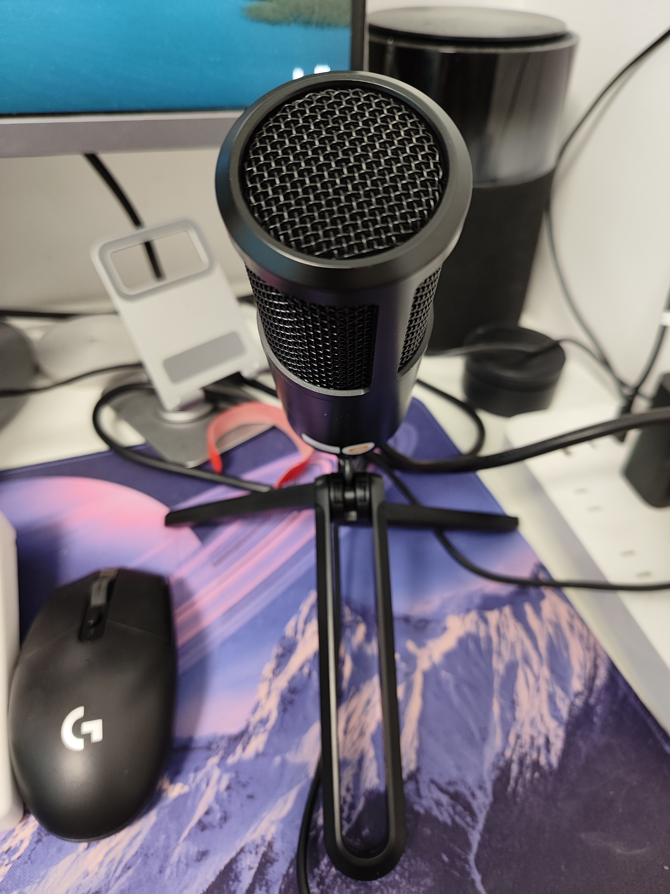
转眼间来到打工人第一个十一假期，因为九月份回家去拍了一次全家福，在家呆了两天，所以十一也没有在家里呆太久，跟好bro去南昌玩了几天，顺便继续散散心，南昌是真的好辣啊，我这个吃辣星人在南昌成功吃怂了，完全顶不住天天吃南昌菜…..

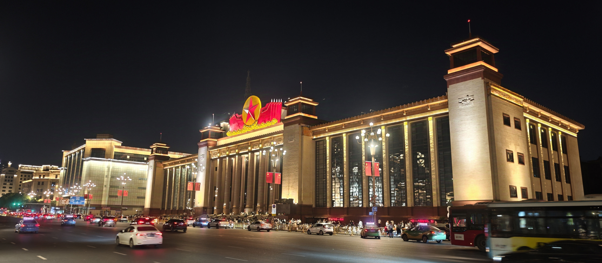
南昌真的是很红专的城市，江西省美术馆
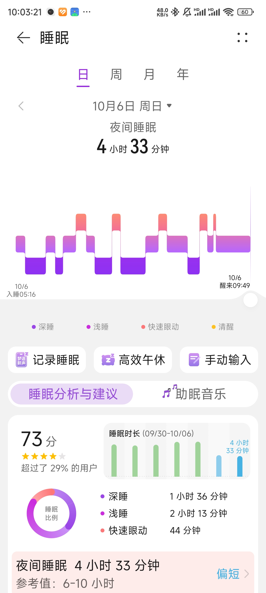
在南昌也能翻来覆去到天明，就这还有73分
十一过后感觉工作强度一整个上来了，整体也比之前忙了很多，月末的时候在负责的一个小项目完结之后看了宇宙人《α：回到未来》20周年演唱会，第一次看没怎么听过的歌手的Livehouse，也是因为获得过金曲奖最佳乐团才愿意去看，整体感觉确实还不错，想象中流行台团的感觉，唱歌也足够稳定，感染力也足够了，比大陆某些流行乐队要强太多……
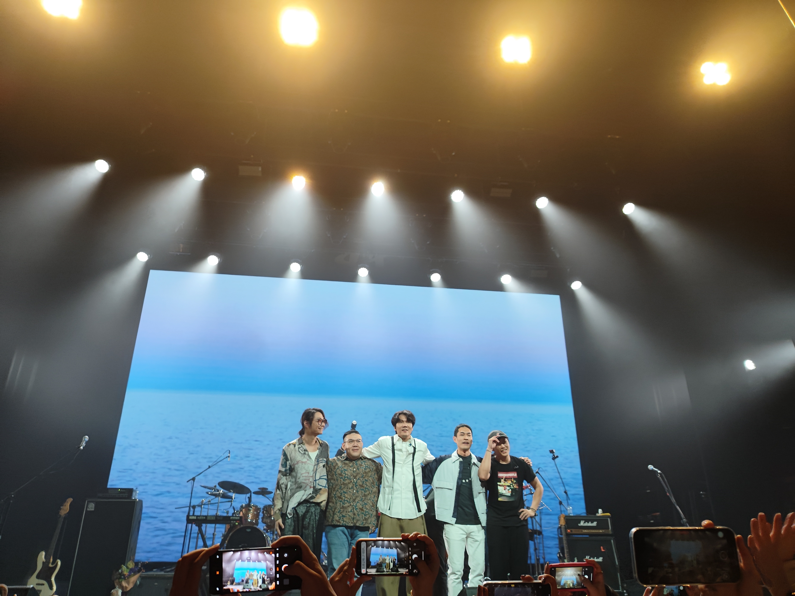
十月末双十一又开启了，正好心心念念的小米15pro发售，换掉了我的红米K50至尊版，拿到手机之后发现整体质感确实很好，这几代小米数字旗舰确实起来了，很会做，但同样没想到很快又被国补被刺(我不伤心，我不伤心)…

十一月份看了三场演出（每周末都爽死了，也同样心疼我的钱包，笑），袁娅维爵士上海20周年专场，韦礼安《如果可以，我想和你明天再见again》上海站，HUSH《GO BIG 巡回演唱会》上海站，都是我非常喜欢的歌手，很幸运有他们的音乐一直陪着我，度过一天又一天……
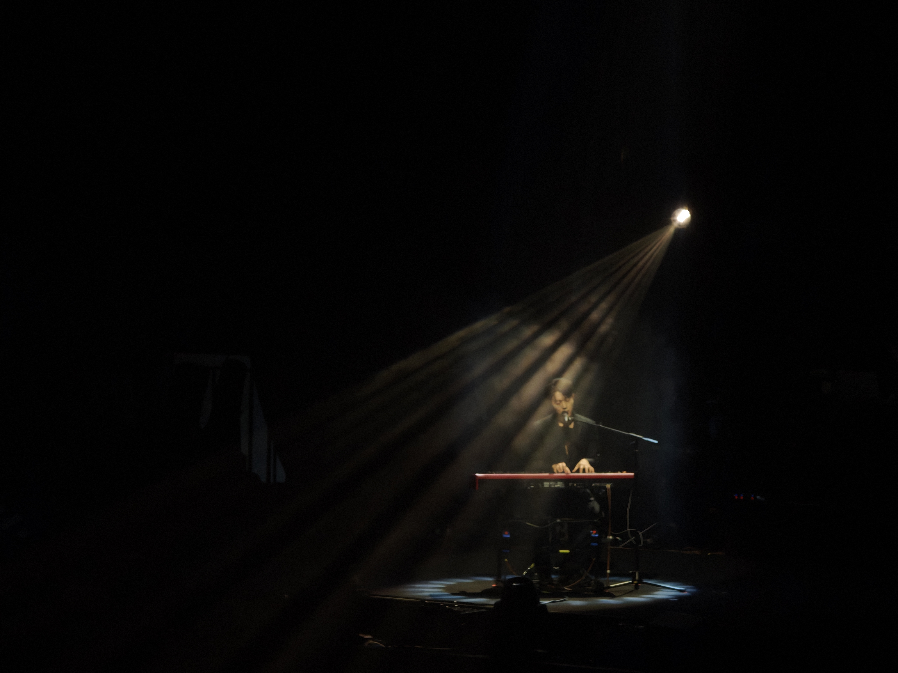

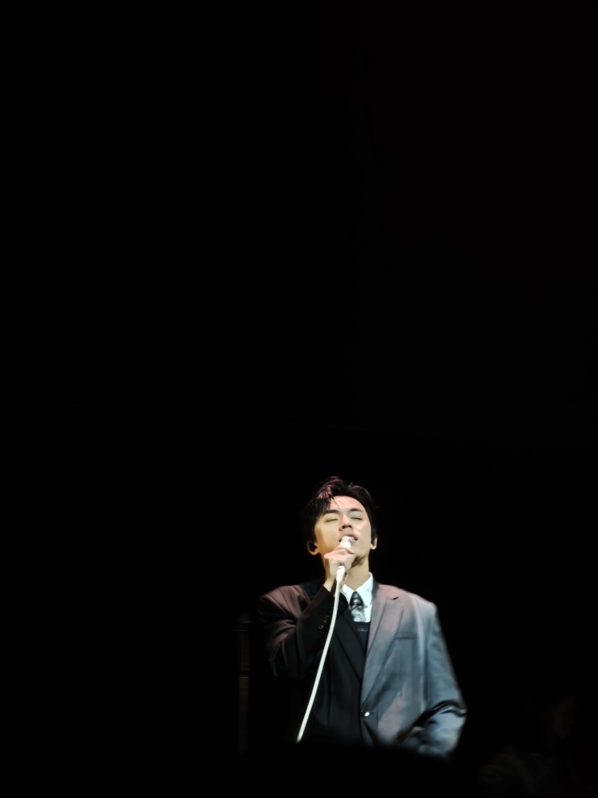
从十一月份开始就发现自己慢慢真的可以走入生活正轨了，戒断期终于过去了，睡眠质量也上来了一些，也算值得庆贺吧，感受到自己的变化真的是件既欣慰又心疼的过程。
十二月份最重要的几件事大概就是月初收到了好bro@指南针指南不指北（没错又是他！）去日本旅游给我带的李志（甚至不知道是不是敏感词）日本精选集，不知道还能不能等到逼哥回归的那天。然后在12.8参加了自己的首场马拉松-海峡两岸昆山马拉松（很想报名江浙沪的A1赛事，可惜现在马拉松太火，又到年末比赛不是很多，合适的都抽不到签了），也算是给几个月的锻炼生涯来了一次检验，成绩算是差强人意吧，忘记穿碳板鞋了不然应该成绩更好的…现在马拉松氛围真的很好，2025绝对会继续跑下去……
不过回来发现两个脚趾的无名指全被跑黑了，跑完刚开始两天直接变成瘸子，左脚的脚趾甲现在已经掉了开始换甲，还挺神奇（笑）

碰到的“真粉丝”

老大爷颤颤巍巍地跑步，向他致敬
然后跟好朋友以许钧上海专场向2024观演行程做了一个收尾，上海专场唱了非常多我喜欢的歌，也看到了喜欢的荒井十一老师，真诚的音乐真的让人心情很好，生活工作都更有劲儿了……

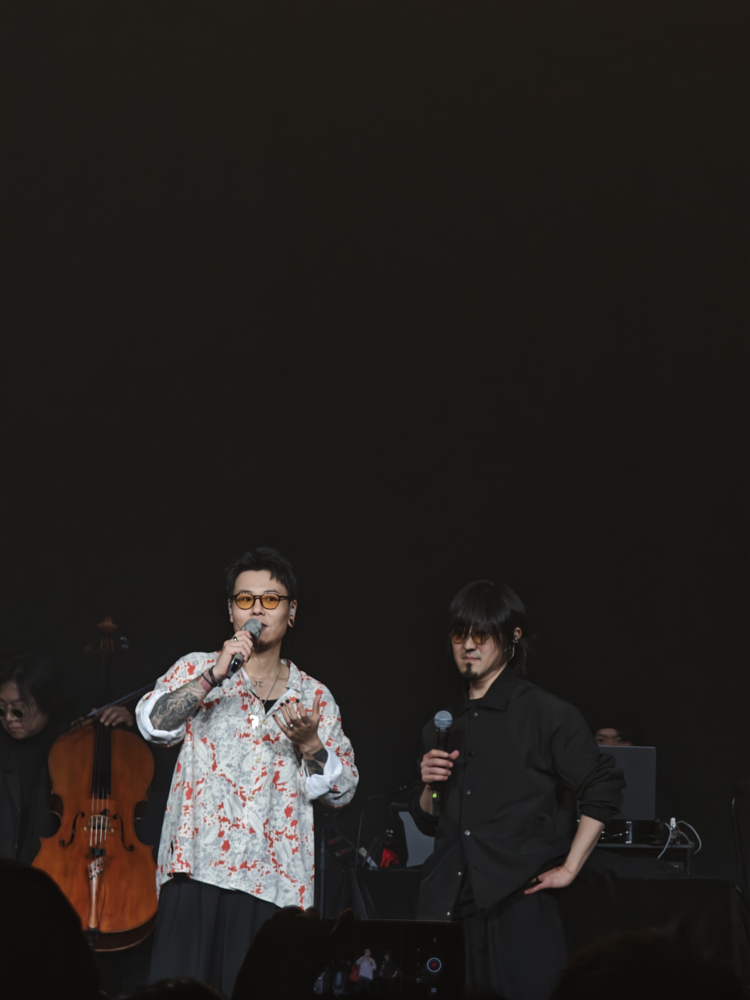
到了这里我的2024差不多到了结束，可能还有很多小美好没有记录到，比如在上海宝可梦官方道馆买了很多可爱的周边，比如跟好bro时不时的周末自助放纵餐，吃遍上海”平价“自助（跑有氧之后我变得真的好能吃…），还有很多很多…这些美好或忧愁都能通过相册慢慢拾起记忆，照片真的是个让人赞叹的发明……
值得一提的是，年末发现好几个一起毕业的朋友被裁，在私企上班的我又变得战战兢兢，如履薄冰。家里的哥哥姐姐基本上全是在体制内工作，所以家里（除了自己爸妈）对自己期待都是去体制内工作，每次回家耳边被念叨的都是那些话，坦白讲在真正踏入工作岗位之前我都算是坚定的，也完全没有去想着在应届最好考的时期去试试公务员体系，那时觉得做程序员是自己非常喜欢的工作，而体制内的工作内容让人头疼，i人的我也完全没有在体制内快速升职的那种”圆滑“，可能进去了就真是一辈子躺平，做着自己不太喜欢的事情，过平平淡淡的生活，但反过来想体制内的生活又能在支撑我吃喝不愁的基础上有一定能力做自己喜欢的事情，比如更无拘无束的观看演出，跑马拉松，也无需因为害怕明天就被谈话裁员而工作的如履薄冰（当然现在考入体制内难度也变大很多了…尽管相信自己的做题家能力，考试也得花费无法预知的漫长时间），而作为程序员本身自己年龄也不算太小，入行之后同样也在迷茫于自己的职业发展道路，大环境越来越差，让自己对”35岁以后怎么办“这件事更加忧虑，实在是每次想到这些问题都很迷茫和头疼。可鱼与熊掌又岂能兼得，在职一天，对职业发展就一天迷茫……但总归而言还是要做好自己的事情，提高自己的竞争力，或许以后会有转机吧，现在看未来也必然是一片迷雾……
最后，对今年做个总结：
- 硕士成功毕业
- 又又分手+长戒断期
- 开始工作
- 赚的钱钱花的差不多（这么高强度的观演那必然的，笑）
- 演出没少看
- 慢慢走出了恋爱的戒断期
- 通过有氧慢跑减掉了30斤的体重
- 有了跑半马的能力，向跑全马能力锻炼。
- 持续迷茫
最后的最后，感谢这一年帮助我的所有朋友，C.，江北烟郭，尘归尘，Lzzz，子而不语，皮皮大哥，BD，@指南针指南不指北，感谢你们陪了我一年又一年，有好朋友一直在身边真的是一件很幸福的事情